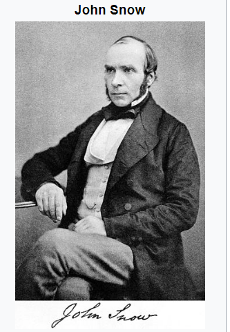
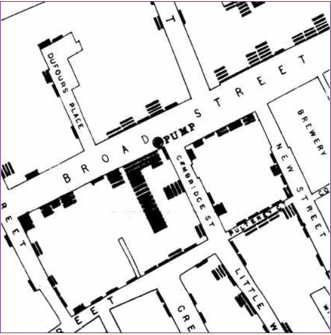

JOHN SNOW AND THE 1854 CHOLERA OUTBREAK
Dr. John Snow (an Obstetrician) is one of the founding fathers of modern epidemiology. Although Dr. Snow was deeply involved
in experiments using a new technique, known as anesthesia, to deliver babies, he was also fascinated with researching his theory
on how cholera spread. As London suffered a series of cholera outbreaks during the mid-19th century, Snow theorized that cholera
reproduced in the human body and was spread through contaminated water. This contradicted the prevailing theory that diseases
were spread by “miasma” in the air.

He couldn’t convince other doctors and scientists that cholera, a deadly disease, was spread when people drank contaminated
water until a mother washed her baby’s diaper in a town well in 1854 and touched off an epidemic that killed 616 people.
London’s water supply system consisted of shallow public wells where people could pump their own water to carry home, and
about a dozen water utilities that drew water from the Thames to supply a jumble of water lines to more upscale houses.
London’s sewage system was even more ad hoc: privies emptied into cesspools or cellars more often than directly into sewer
pipes. So, the pervasive stench of animal and human feces combined with rotting garbage made the miasma theory of disease.

The September 1854 cholera outbreak was centered in the Soho district, close to Snow’s house. Snow mapped the 13 public wells
and all the known cholera deaths around Soho, and noted that spatial clustering of cases around one particular water pump on
the southwest corner of the intersection of Broad (now Broad wick) Street and Cambridge (now Lexington) Street. He examined
water samples from various wells under a microscope, and confirmed the presence of unknown bacterium in the Broad Street
samples. Despite strong skepticism from the local authorities, he had the pump handle removed from the Broad street pump and
the outbreak quickly subsided.
What he couldn’t prove was where the contamination came from in the first place.